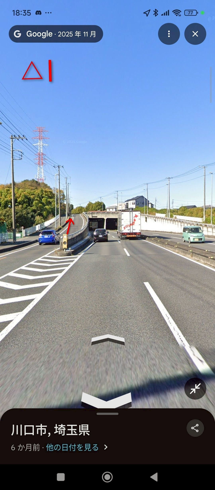
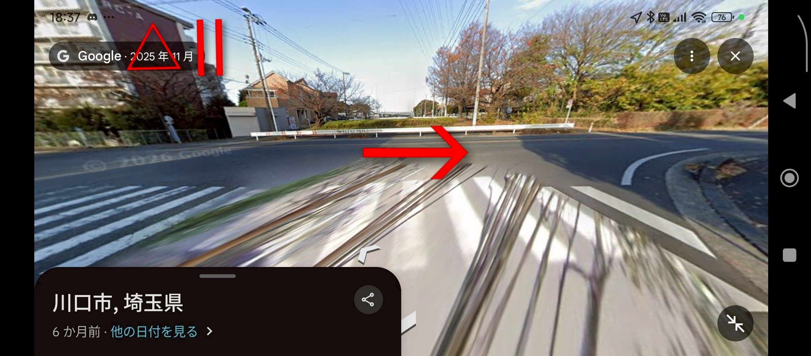
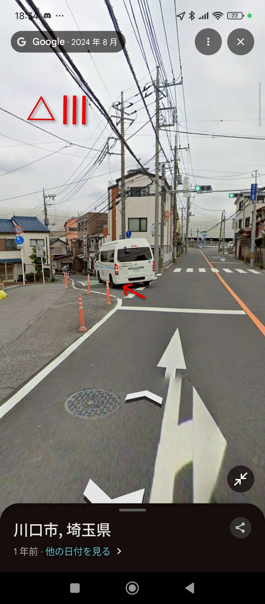
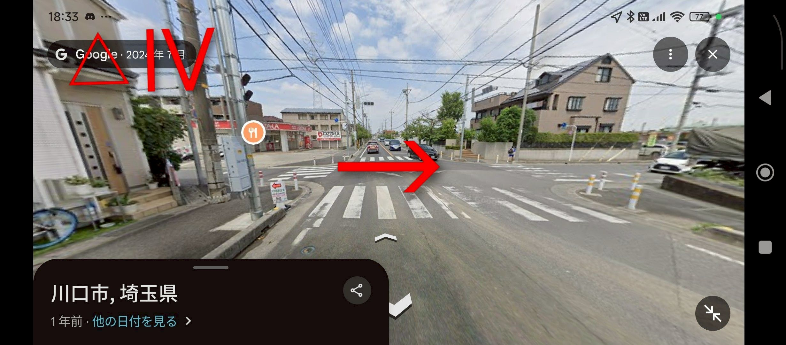
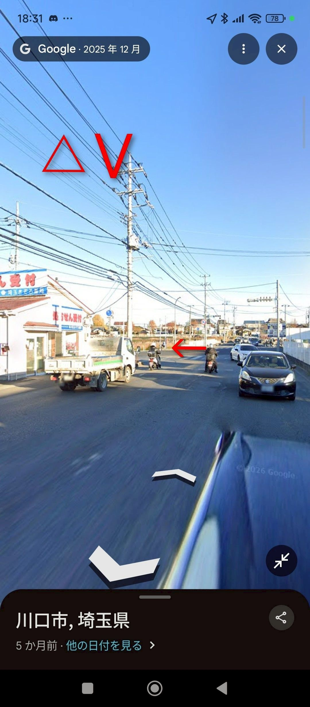
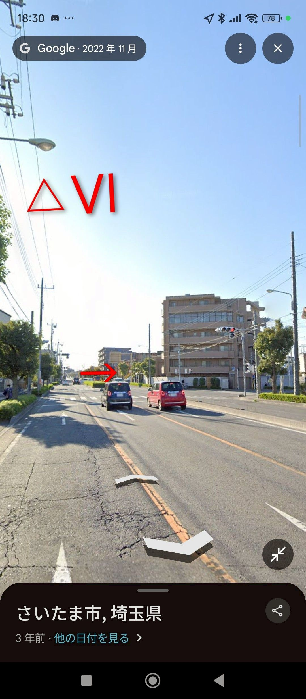
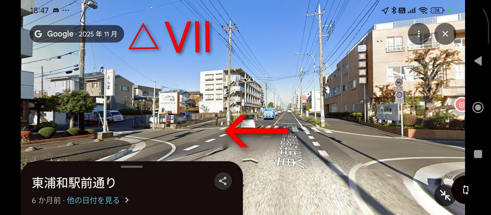

里中学校→さいたま市立尾間木中学校
△は参考画像あり
- 第二産業道路に出る(いつも外周で通る大きな道)
- 第二産業道路を右折、直進しトンネルがある坂を登る△Ⅰ
- 坂を登り突き当たり(?)のようなところを右折△Ⅱ
- 直進するとバス停のあるところで左斜に下り坂があるので下る(正面にはファミリーマートと外環自動車道が見える)△Ⅲ
- 坂をくだり外環自動車道のトンネルを抜けると突き当たるので左折
- 左手にピザーラのある交差点(信号：北スポーツセンター)を右折△Ⅳ
- 北スポ、北中、北高を過ぎると急に大通りに出るので左折△Ⅴ
- 青看が過ぎトイプラネットという店があるとこを右折(右にしか曲がれない)△Ⅵ
- 東浦和駅を過ぎ、東和病院や「とんぼ」「リフォーム創研」という看板があるとこを右折△Ⅶ
- 尾間木中に突き当たり到着






